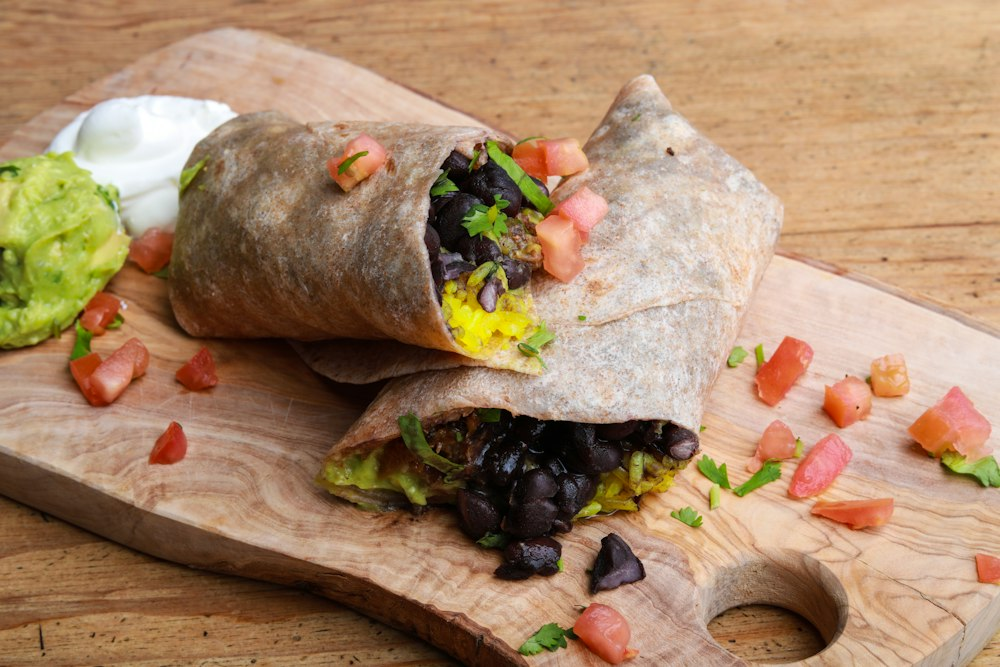
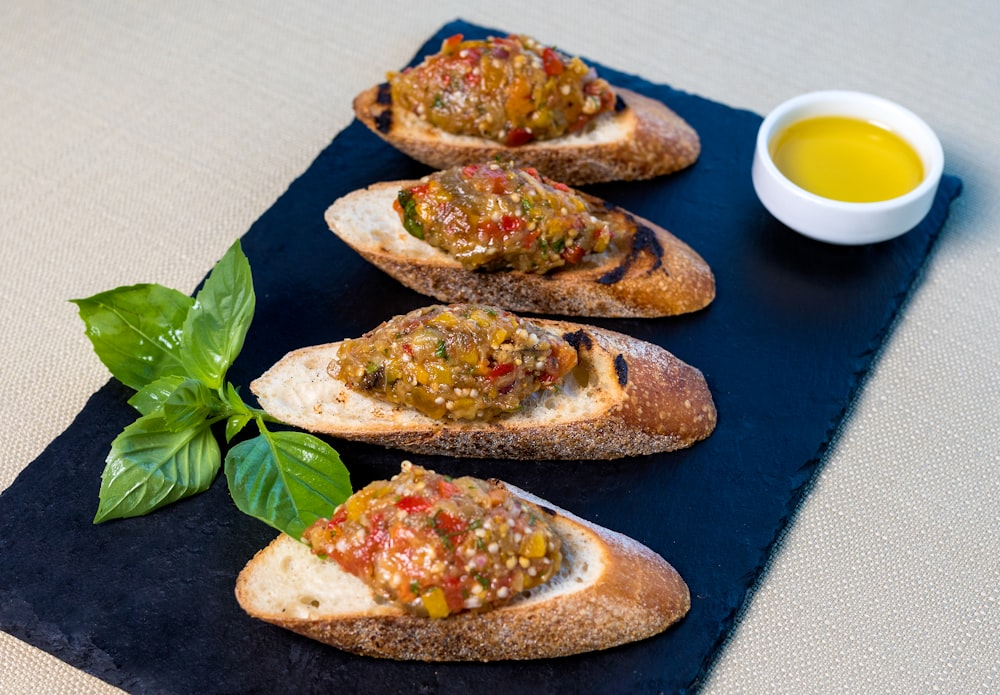
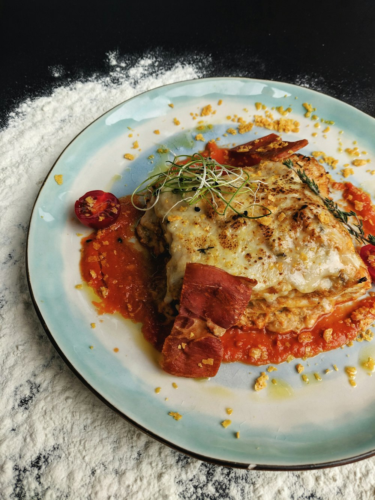

Uptown Charlotte's Legendary Burrito Bar
Subterranean speed, massive custom burritos, five scratch salsas, and the city's most beloved Tuesday & Friday tamale tradition.
Fast, Flavorful, Fuel for Uptown
Whether rushing between board meetings in Two Wells Fargo or grabbing an express office lunch, Johnny delivers unbeatable flavor and value.

SignatureCalifornia Burrito
$9.75+Warm pressed tortilla stuffed with seasoned chicken, flank steak, or picadillo beef, cilantro-lime rice, black beans, Monterey Jack, and your choice of fresh salsa.
Customize Online
Tue & Fri OnlyScratch Tamales
$3.95 eaHand-rolled in real corn husks, steamed piping hot twice a week. Four rotating fillings including chicken salsa verde, tender beef, smoked pork, and veggie squash.
Tamale Details
Scratch CraftedSalsa Bar & Queso
$4.25+Crisp golden tortilla chips paired with warm spiced concourse queso, fresh hand-smashed guacamole, and five signature house salsas ranging from mild to El Diablo.
Explore SalsasHow To Find Johnny Burrito
Located underground inside the Two Wells Fargo Center concourse at 301 S Tryon Street. If you're on street level, enter the Two Wells Fargo glass atrium, head straight for the escalators, ride them down, and turn immediately to your right!
-
1
Enter Two Wells Fargo Atrium
Access from S Tryon St or the connected Overstreet Mall walkway.
-
2
Take The Escalator Down
Descend into the lower concourse retail level.
-
3
Turn Right & Walk The Line
Look for the colorful Johnny Burrito sign and fast-moving lunch queue.